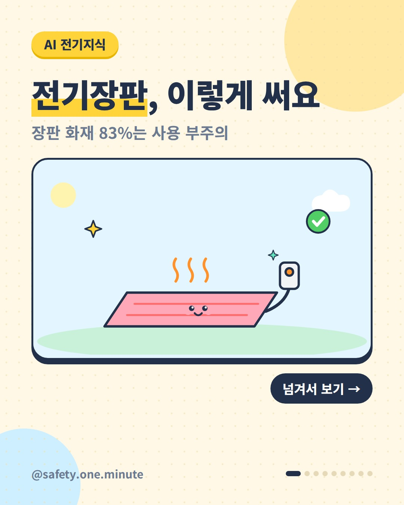
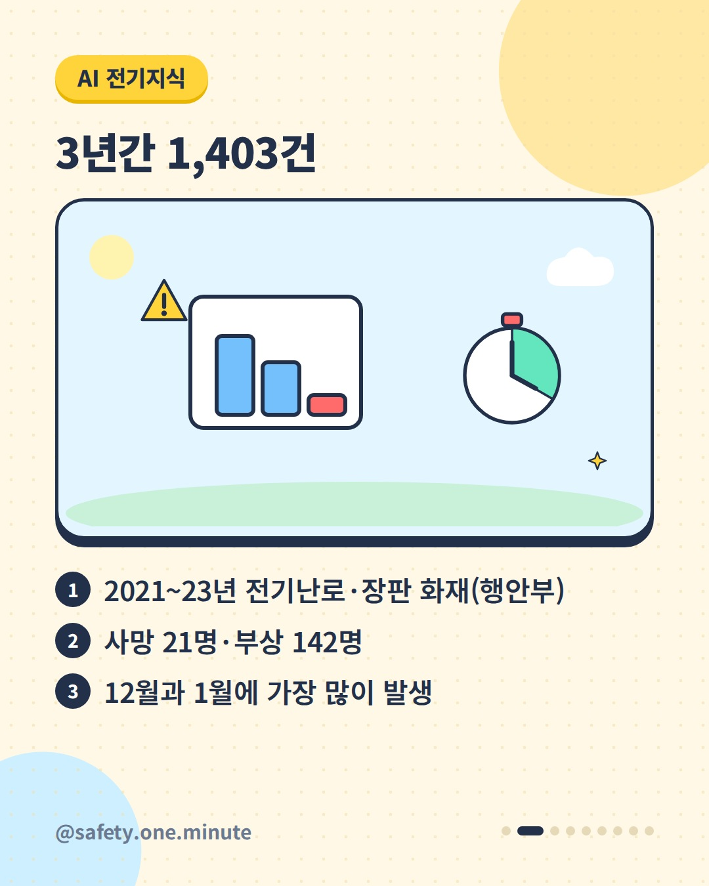
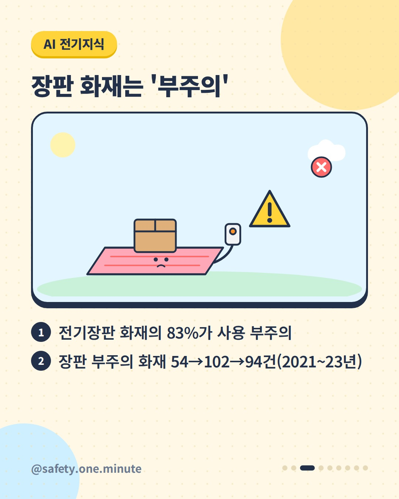
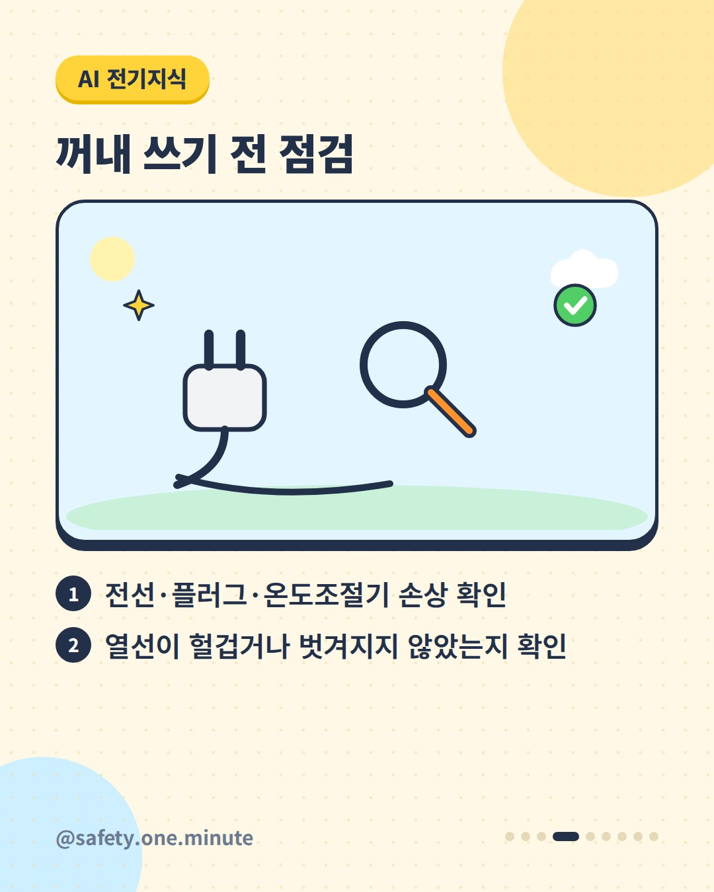
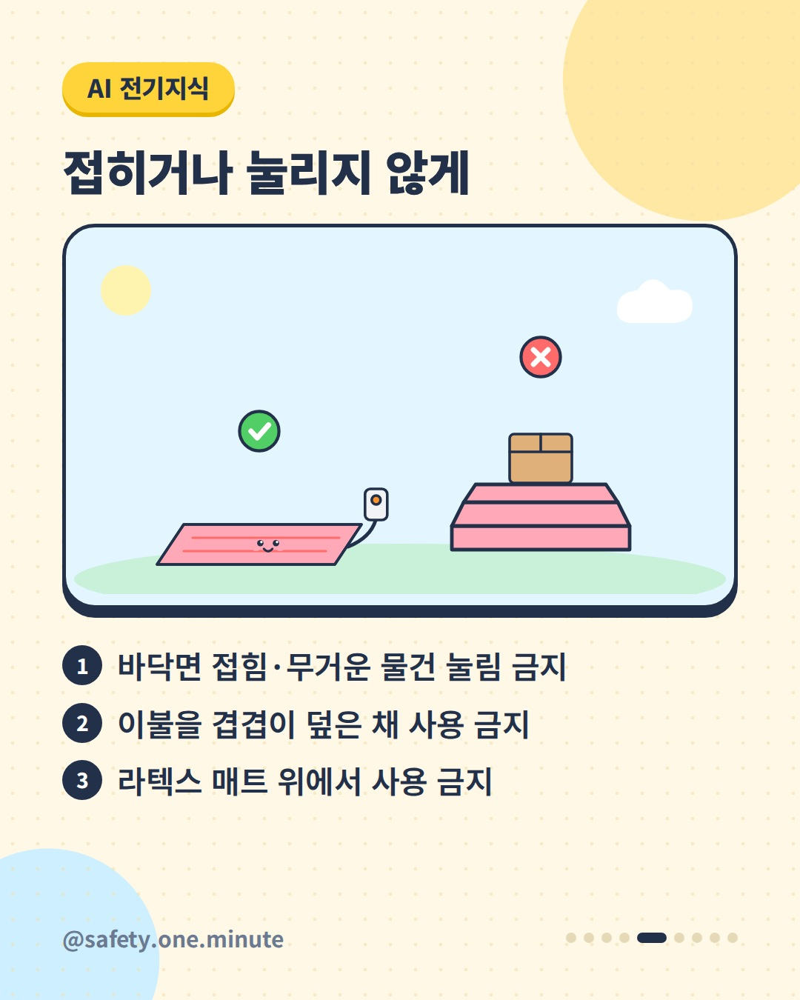
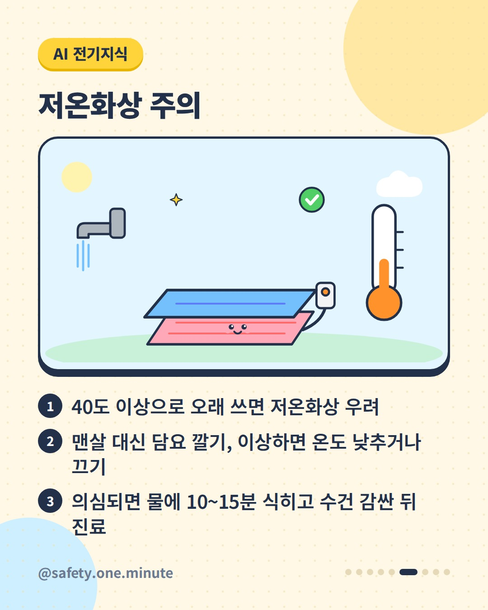
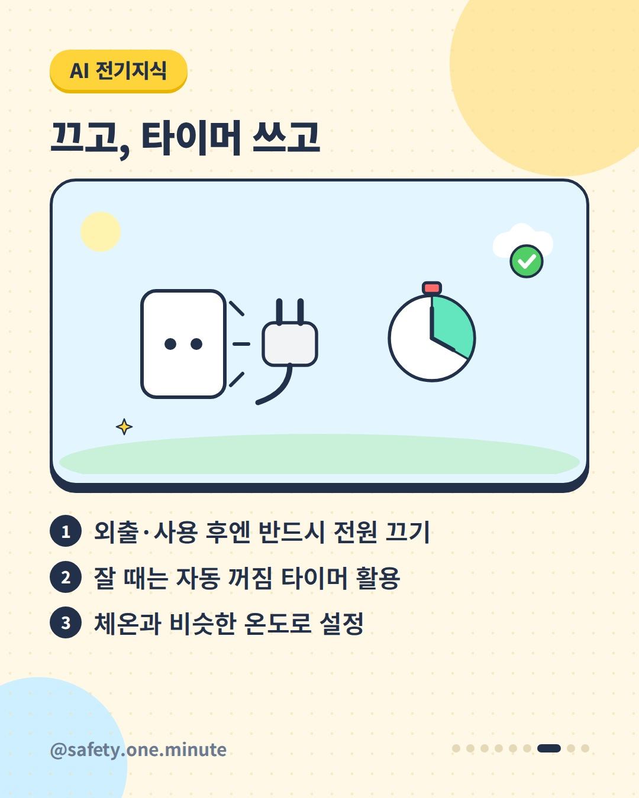
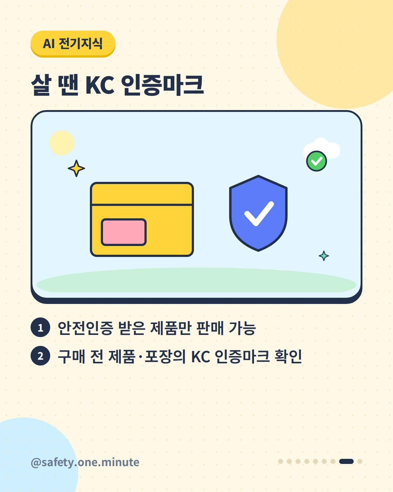
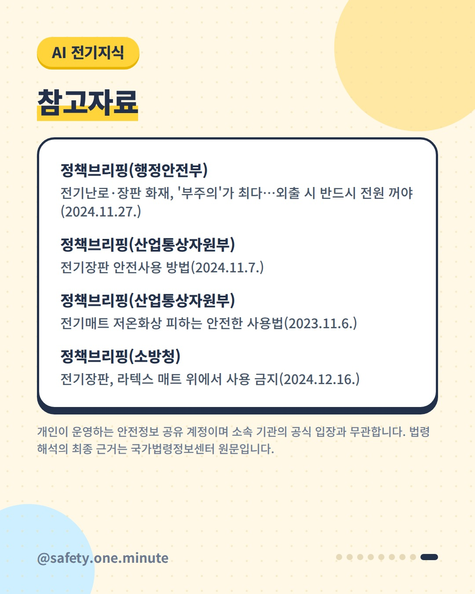

전기장판, 이렇게 써요 — 9장 (4:5)









캡션
겨울 필수품 전기장판, 꺼내기 전에 한 번만 확인하세요. 행정안전부에 따르면 2021~2023년 전기난로·전기장판 화재는 1,403건(사망 21명·부상 142명)이었고, 12월과 1월에 가장 많았습니다. 전기장판 화재는 기기 사용 부주의가 83%로 대부분이었습니다. 이렇게 쓰면 더 안전합니다. ① 오래 보관한 제품은 전선·플러그·온도조절기·열선 상태부터 확인 ② 바닥면이 접히거나 무거운 물건에 눌리지 않게, 이불을 겹겹이 덮거나 라텍스 매트 위에서 쓰지 않기 ③ 40도 이상 고온으로 오래 쓰면 저온화상 우려 — 맨살 대신 이불·담요를 깔고, 이상하면 온도를 낮추거나 끄기 ④ 외출하거나 다 쓰면 전원 끄기, 잘 때는 자동 꺼짐 타이머 활용 ⑤ 살 때는 제품·포장의 KC 인증마크 확인 저온화상이 의심되면 흐르는 물에 10~15분 식히고 깨끗한 수건으로 감싼 뒤 진료를 받으세요. 출처: - 행정안전부 – 전기난로·장판 화재 통계와 안전수칙(2024) - 산업통상자원부 – 전기장판 안전사용 방법(2024), 전기매트 저온화상 예방(2023) - 소방청 – 전기장판, 라텍스 매트 위에서 사용 금지(2024) 개인이 운영하는 안전정보 공유 계정이며 소속 기관의 공식 입장과 무관합니다. 법령 해석의 최종 근거는 국가법령정보센터 원문입니다. #전기장판 #전기매트 #저온화상 #화재예방 #겨울철안전 #전기안전